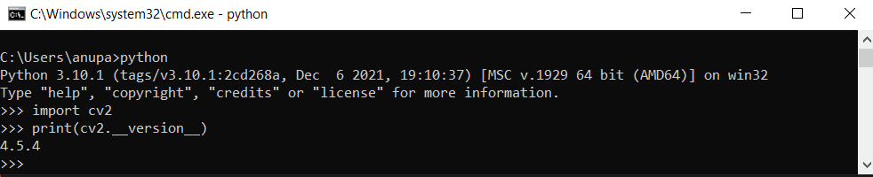

Installing Python and OpenCV
Install OpenCV on Windows
To install OpenCV, one must have Python and PIP, preinstalled on their system. To check if your system already contains Python, go through the following instructions:
Open the Command line(search for cmd in the Run dialog (Win+ R).
Now run the following command:
python --version
If Python is already installed, it will generate a message with the Python version available.
If Python is not present, go through Install Python on Windows and follow the instructions provided.
Next Check pip version using the following command
pip -V
Download and Install Python
OpenCV can be directly downloaded and installed with the use of pip (package manager). To install OpenCV, just go to the command-line and type the following command:
pip install opencv-python
To check whether opencv have been installed correctly, you can run the following command:
python
>>> import cv2
>>> print(cv2.__version__)

Installed Successfully.
Install OpenCV on Ubuntu and MacOS
Simply execute the following command:
sudo apt update
sudo apt install libopencv-dev python3-opencv
Installed Successfully.